降落點空地：空景圖實驗
目標：這塊空地每次出現都要很像。做法照實驗室：先照地圖畫幾張空景圖（不放人物），定案後每一格只附鏡頭看得到的那張，prompt 寫照著附圖畫、不再用文字描述背景。
畫圖日期：2026-11-24 Flow 專案：EP1-NEW
實驗紀錄
- 備份：實驗前整份複製到 backups/20261124_before_arrive_plates/（5409 個檔、716 MB，檔案數比對一致）；實驗的新檔一律新名字、新位置，不覆蓋舊檔。
- 地圖簡化（使用者決定）：arrive.json、arrive_dusk.json 拿掉泥地和東北角蕨類；劇情需要的 06-01、06-02、17-07（泥地）、06-05（蕨類）只在 prompt 用文字寫。
- 要幾張：程式算這塊地所有格子的相機朝向——往北 28 格、往西 13 格、往南 5 格、往東 0 格、空拍 2 格 → 畫往北、往西、往南、空拍。
- 甲龍（使用者決定）：看得到甲龍位置的方向各畫兩版——石頭版（甲龍睡著，像一顆石頭）、空位版（甲龍醒來走了，原地沒有東西）。往北那張甲龍在視野外，只畫一版。共 7 張，每張 4 張候選。
- 畫風參考圖：只附植物設定圖 REF_PLANTS（沒有角色，避免模型把人畫進去）；石頭版另附 REF_ANKY。REF_PLANTS 原本不在 EP1-NEW，11-24 上傳並在圖庫搜尋確認。
- 這一輪只做白天（上午）；黃昏要不要另做一套，看這輪結果再決定。
- 挑空景（使用者：你先挑一張，繼續做實驗）：Claude 照地圖逐項看，每張選一張（理由寫在各張下面、docs/picks/PLATE-ARRIVE.json），下載 2K 存 refs_v7/plates/PLATE_ARRIVE_<張>.jpg，上傳 EP1-NEW 並逐張搜尋確認。
往北（從空地南端） N
地圖上的位置：相機 H31 高 1.5 m 往正北；甲龍在左前 41°，60° 視野外（不入鏡）；缺口 K15–K16 在右前方約 32 m
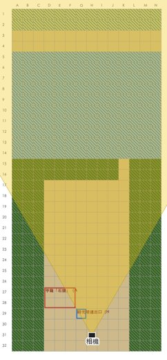
附的參考圖：
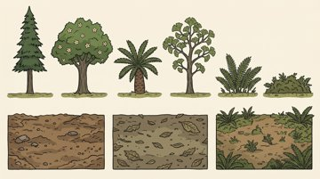
REF_PLANTSFlow 畫的 4 張（點圖開 Flow）
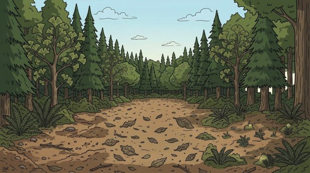
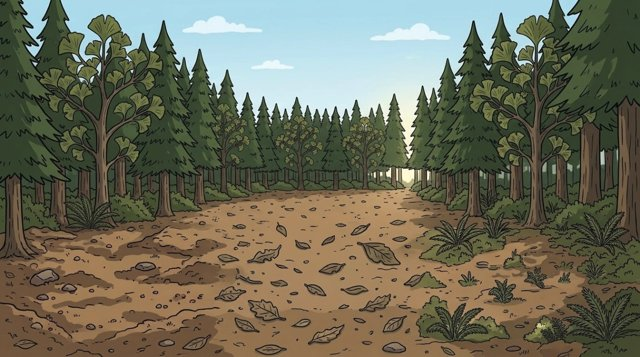
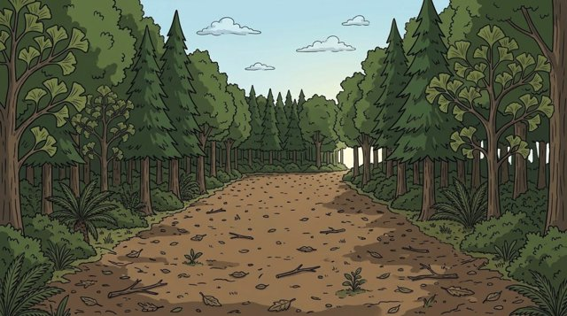
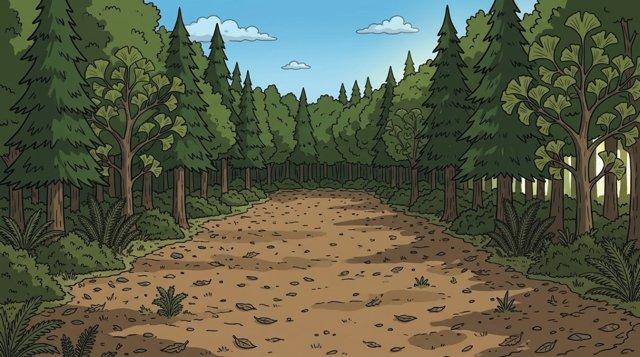
英文 prompt（送出的原文）
16:9, generate 1 image. Flat 2D cartoon in exactly the style of the attached plant sheet REF_PLANTS: thick black outlines, flat colors. No text anywhere in the picture. No people, no characters and no animals anywhere in the picture: an empty landscape. All trees and plants are only the kinds shown in REF_PLANTS: conifers, cycads and ginkgos; no flowering trees and no palm trees. The camera stands at eye level (1.5 m above the ground) at the south end of a long, narrow forest clearing and looks straight north along its length. The clearing is about 16 m wide and about 30 m long; its ground is flat bare earth covered with fallen leaves and a few low plants, with no grass, no mud and no fern patches. Along the whole left edge and the whole right edge of the clearing, from the near corners all the way to the far end, stands a solid wall of tall, dense forest. At the far end, a band of the same dense forest closes the clearing off completely, except for one narrow gap at the right end of that band, where a little bright daylight shows through between the trunks. Deep focus: everything from the ground at the bottom edge of the picture to the trees at the far end is sharp and clear. Above the treetops is a blue morning sky with a few small clouds. Morning sunlight comes from behind the camera on the right, so shadows fall forward and to the left.
中文翻譯
16:9，畫 1 張。完全照附的植物設定圖 REF_PLANTS 的畫風：粗黑外框、平塗色。畫面裡沒有任何字。畫面裡沒有人、沒有角色、沒有動物：一張空景。樹和植物只能是 REF_PLANTS 裡的種類：針葉樹、蘇鐵、銀杏；沒有開花的樹、沒有棕櫚樹。相機在一塊窄長森林空地的南端，平視高度（離地 1.5 m），沿著空地的長邊往正北看。空地寬約 16 m、長約 30 m；地面是平的泥土，鋪著落葉和少量矮植物，沒有草、沒有泥巴、沒有蕨類叢。空地左邊整條邊和右邊整條邊，從近處兩個角一路到盡頭，都是一整面高大茂密的森林牆。盡頭被同樣茂密的一排樹完全封住，只有那排樹的右端有一道窄窄的缺口，樹幹之間透出一點明亮的天光。深景：從畫面底邊的地面到盡頭的樹，全部清楚銳利。樹梢上方是早上的藍天、幾朵小雲。早上的陽光從相機後方右側照過來，影子往前、往左倒。
往西・石頭版（甲龍睡著） W_ROCK
地圖上的位置：相機 K27（空地東邊）高 1.5 m 往正西；甲龍 D27–F28 在正前方約 12 m，背後西邊森林牆 A–C 約 16 m；左邊（南）空地 10 m 到底，右邊（北）20 m 到樹林

附的參考圖：
REF_PLANTS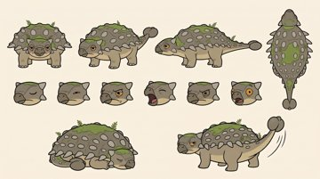
REF_ANKYFlow 畫的 4 張（點圖開 Flow）
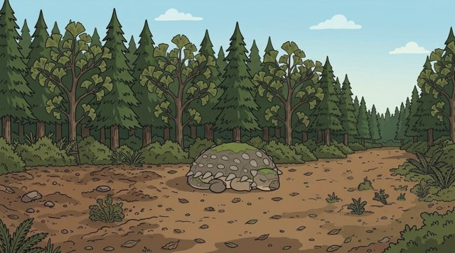
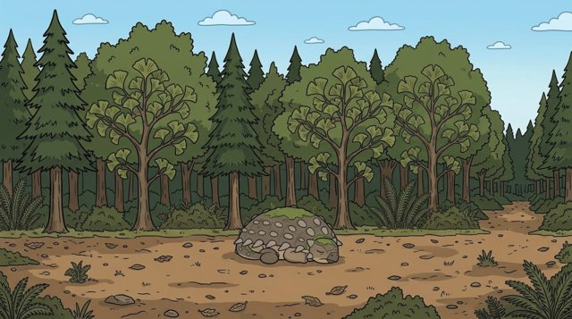
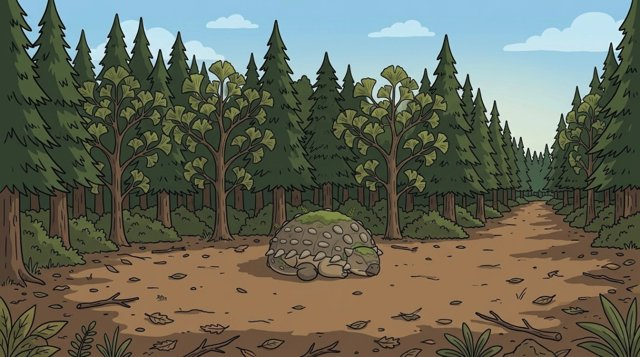
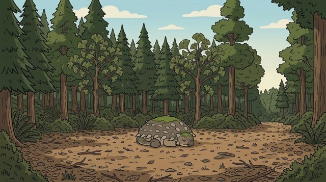
英文 prompt（送出的原文）
16:9, generate 1 image. Flat 2D cartoon in exactly the style of the attached plant sheet REF_PLANTS: thick black outlines, flat colors. No text anywhere in the picture. No people in the picture. All trees and plants are only the kinds shown in REF_PLANTS: conifers, cycads and ginkgos; no flowering trees and no palm trees. The camera stands at eye level (1.5 m above the ground) on the east side of a long, narrow forest clearing and looks straight west across its width. The ground is flat bare earth covered with fallen leaves and a few low plants, with no grass, no mud and no fern patches. In the middle of the picture, about 12 m away and just in front of the far forest wall, lies ANKY the ankylosaur (exactly as in the attached ANKY sheet REF_ANKY), fast asleep and curled up so it looks exactly like a big moss-covered boulder, legs tucked under, eyes closed. Behind it, a solid wall of tall, dense forest fills the whole width of the picture. On the right side of the picture the clearing runs on into the distance to the north, ending at more dense forest; on the left side it runs only a short way to the south end, which is also closed off by dense forest. Deep focus: everything from the ground at the bottom edge of the picture to the forest wall is sharp and clear. Above the treetops is a blue morning sky with a few small clouds. Morning sunlight comes from behind the camera on the left, so shadows fall forward and to the right.
中文翻譯
16:9，畫 1 張。完全照附的植物設定圖 REF_PLANTS 的畫風：粗黑外框、平塗色。畫面裡沒有任何字。畫面裡沒有人。樹和植物只能是 REF_PLANTS 裡的種類：針葉樹、蘇鐵、銀杏；沒有開花的樹、沒有棕櫚樹。相機站在一塊窄長森林空地的東邊，平視高度（離地 1.5 m），橫越空地往正西看。地面是平的泥土，鋪著落葉和少量矮植物，沒有草、沒有泥巴、沒有蕨類叢。畫面中間、約 12 m 遠、就在對面森林牆前面，趴著甲龍 ANKY（完全照附的甲龍設定圖 REF_ANKY），睡得很熟、蜷成一團，看起來就像一顆長滿青苔的大石頭，腳收在身體下面、眼睛閉著。牠後面是一整面高大茂密的森林牆，占滿整個畫面寬度。畫面右邊，空地往北一路延伸到遠處，盡頭也是茂密森林；畫面左邊，空地只往南延伸一小段就到南端，同樣被茂密森林封住。深景：從畫面底邊的地面到森林牆，全部清楚銳利。樹梢上方是早上的藍天、幾朵小雲。早上的陽光從相機後方左側照過來，影子往前、往右倒。
往西・空位版（甲龍走了） W_EMPTY
地圖上的位置：同 W_ROCK，甲龍醒來走了，D27–F28 是空地
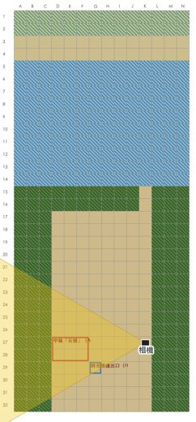
附的參考圖：
REF_PLANTSFlow 畫的 4 張（點圖開 Flow）
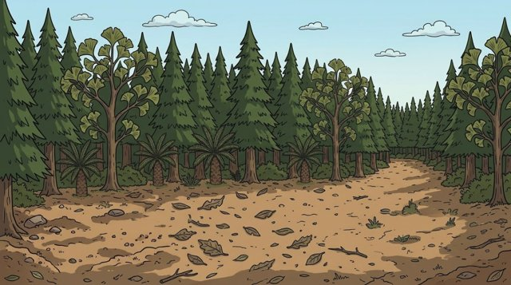
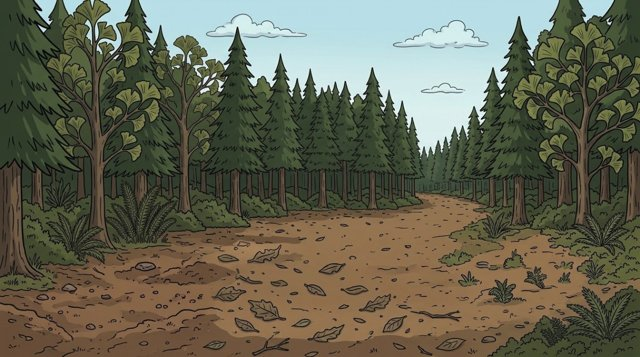
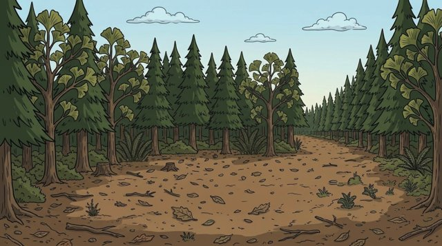
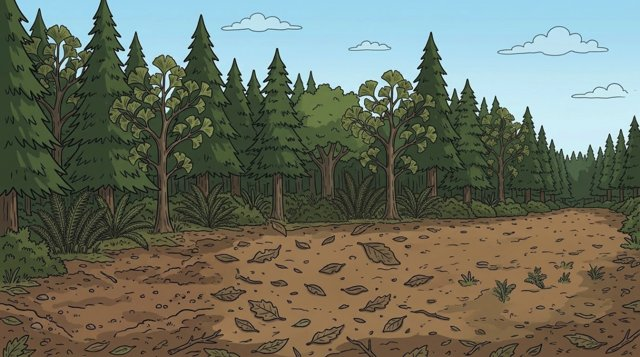
英文 prompt（送出的原文）
16:9, generate 1 image. Flat 2D cartoon in exactly the style of the attached plant sheet REF_PLANTS: thick black outlines, flat colors. No text anywhere in the picture. No people, no characters and no animals anywhere in the picture: an empty landscape. All trees and plants are only the kinds shown in REF_PLANTS: conifers, cycads and ginkgos; no flowering trees and no palm trees. The camera stands at eye level (1.5 m above the ground) on the east side of a long, narrow forest clearing and looks straight west across its width. The ground is flat bare earth covered with fallen leaves and a few low plants, with no grass, no mud and no fern patches. In the middle of the picture, about 12 m away and just in front of the far forest wall, there is only empty leaf-covered ground, with no rocks or boulders. Behind it, a solid wall of tall, dense forest fills the whole width of the picture. On the right side of the picture the clearing runs on into the distance to the north, ending at more dense forest; on the left side it runs only a short way to the south end, which is also closed off by dense forest. Deep focus: everything from the ground at the bottom edge of the picture to the forest wall is sharp and clear. Above the treetops is a blue morning sky with a few small clouds. Morning sunlight comes from behind the camera on the left, so shadows fall forward and to the right.
中文翻譯
16:9，畫 1 張。完全照附的植物設定圖 REF_PLANTS 的畫風：粗黑外框、平塗色。畫面裡沒有任何字。畫面裡沒有人、沒有角色、沒有動物：一張空景。樹和植物只能是 REF_PLANTS 裡的種類：針葉樹、蘇鐵、銀杏；沒有開花的樹、沒有棕櫚樹。相機站在一塊窄長森林空地的東邊，平視高度（離地 1.5 m），橫越空地往正西看。地面是平的泥土，鋪著落葉和少量矮植物，沒有草、沒有泥巴、沒有蕨類叢。畫面中間、約 12 m 遠、就在對面森林牆前面，只有空空的、鋪著落葉的地面，沒有任何石頭或大石塊。後面是一整面高大茂密的森林牆，占滿整個畫面寬度。畫面右邊，空地往北一路延伸到遠處，盡頭也是茂密森林；畫面左邊，空地只往南延伸一小段就到南端，同樣被茂密森林封住。深景：從畫面底邊的地面到森林牆，全部清楚銳利。樹梢上方是早上的藍天、幾朵小雲。早上的陽光從相機後方左側照過來，影子往前、往右倒。
往南・石頭版（甲龍睡著） S_ROCK
地圖上的位置：相機 H20（空地北段）高 1.5 m 往正南；甲龍 D27–F28 在右前 22°、約 16 m，靠右邊（西）森林牆；空地往前 24 m 到南端森林
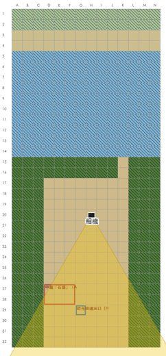
附的參考圖：
REF_PLANTSREF_ANKYFlow 畫的 4 張（點圖開 Flow）
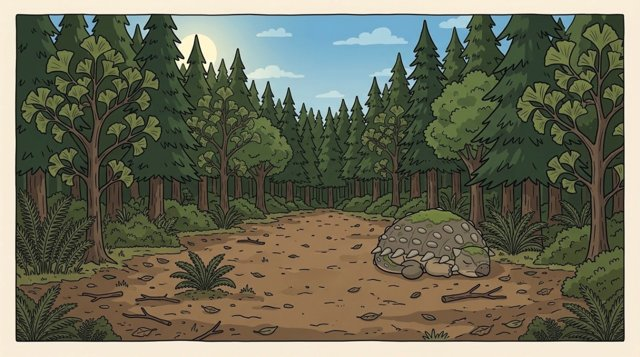
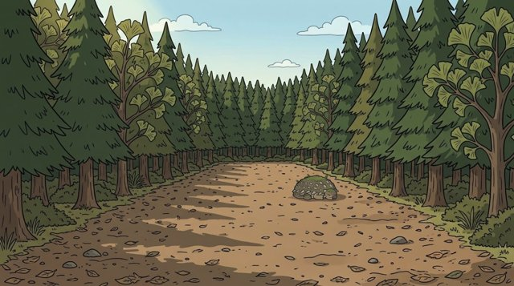
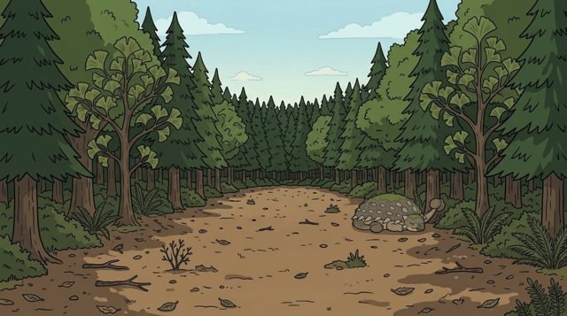
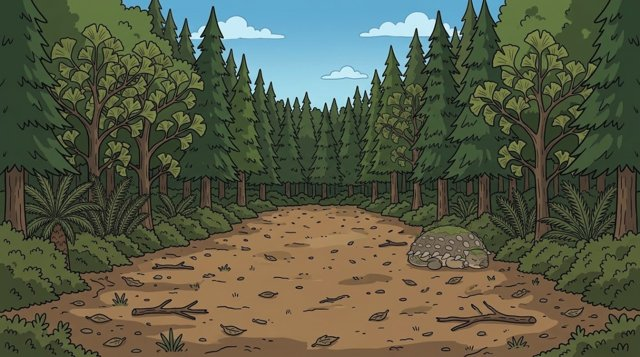
英文 prompt（送出的原文）
16:9, generate 1 image. Flat 2D cartoon in exactly the style of the attached plant sheet REF_PLANTS: thick black outlines, flat colors. No text anywhere in the picture. No people in the picture. All trees and plants are only the kinds shown in REF_PLANTS: conifers, cycads and ginkgos; no flowering trees and no palm trees. The camera stands at eye level (1.5 m above the ground) in the northern part of a long, narrow forest clearing and looks straight south along its length. The clearing is about 16 m wide and stretches about 24 m ahead; its ground is flat bare earth covered with fallen leaves and a few low plants, with no grass, no mud and no fern patches. Along the whole left edge and the whole right edge of the clearing stands a solid wall of tall, dense forest, and at the far end the dense forest closes the clearing off completely. Right of the middle of the picture, about 16 m away and close to the right-hand forest wall, lies ANKY the ankylosaur (exactly as in the attached ANKY sheet REF_ANKY), fast asleep and curled up so it looks exactly like a big moss-covered boulder, legs tucked under, eyes closed. Deep focus: everything from the ground at the bottom edge of the picture to the trees at the far end is sharp and clear. Above the treetops is a blue morning sky with a few small clouds. The morning sun is ahead on the left, above the trees, so shadows fall toward the camera and to the right.
中文翻譯
16:9，畫 1 張。完全照附的植物設定圖 REF_PLANTS 的畫風：粗黑外框、平塗色。畫面裡沒有任何字。畫面裡沒有人。樹和植物只能是 REF_PLANTS 裡的種類：針葉樹、蘇鐵、銀杏；沒有開花的樹、沒有棕櫚樹。相機在一塊窄長森林空地的北段，平視高度（離地 1.5 m），沿著空地的長邊往正南看。空地寬約 16 m，往前延伸約 24 m；地面是平的泥土，鋪著落葉和少量矮植物，沒有草、沒有泥巴、沒有蕨類叢。空地左邊整條邊和右邊整條邊都是一整面高大茂密的森林牆，盡頭被茂密森林完全封住。畫面中間偏右、約 16 m 遠、靠近右邊的森林牆，趴著甲龍 ANKY（完全照附的甲龍設定圖 REF_ANKY），睡得很熟、蜷成一團，看起來就像一顆長滿青苔的大石頭，腳收在身體下面、眼睛閉著。深景：從畫面底邊的地面到盡頭的樹，全部清楚銳利。樹梢上方是早上的藍天、幾朵小雲。早上的太陽在前方左邊、樹梢上方，影子往相機這邊、往右倒。
往南・空位版（甲龍走了） S_EMPTY
地圖上的位置：同 S_ROCK，甲龍醒來走了，D27–F28 是空地

附的參考圖：
REF_PLANTSFlow 畫的 4 張（點圖開 Flow）
英文 prompt（送出的原文）
16:9, generate 1 image. Flat 2D cartoon in exactly the style of the attached plant sheet REF_PLANTS: thick black outlines, flat colors. No text anywhere in the picture. No people, no characters and no animals anywhere in the picture: an empty landscape. All trees and plants are only the kinds shown in REF_PLANTS: conifers, cycads and ginkgos; no flowering trees and no palm trees. The camera stands at eye level (1.5 m above the ground) in the northern part of a long, narrow forest clearing and looks straight south along its length. The clearing is about 16 m wide and stretches about 24 m ahead; its ground is flat bare earth covered with fallen leaves and a few low plants, with no grass, no mud and no fern patches. Along the whole left edge and the whole right edge of the clearing stands a solid wall of tall, dense forest, and at the far end the dense forest closes the clearing off completely. Right of the middle of the picture, about 16 m away and close to the right-hand forest wall, there is only empty leaf-covered ground, with no rocks or boulders. Deep focus: everything from the ground at the bottom edge of the picture to the trees at the far end is sharp and clear. Above the treetops is a blue morning sky with a few small clouds. The morning sun is ahead on the left, above the trees, so shadows fall toward the camera and to the right.
中文翻譯
16:9，畫 1 張。完全照附的植物設定圖 REF_PLANTS 的畫風：粗黑外框、平塗色。畫面裡沒有任何字。畫面裡沒有人、沒有角色、沒有動物：一張空景。樹和植物只能是 REF_PLANTS 裡的種類：針葉樹、蘇鐵、銀杏；沒有開花的樹、沒有棕櫚樹。相機在一塊窄長森林空地的北段，平視高度（離地 1.5 m），沿著空地的長邊往正南看。空地寬約 16 m，往前延伸約 24 m；地面是平的泥土，鋪著落葉和少量矮植物，沒有草、沒有泥巴、沒有蕨類叢。空地左邊整條邊和右邊整條邊都是一整面高大茂密的森林牆，盡頭被茂密森林完全封住。畫面中間偏右、約 16 m 遠、靠近右邊的森林牆，只有空空的、鋪著落葉的地面，沒有任何石頭或大石塊。深景：從畫面底邊的地面到盡頭的樹，全部清楚銳利。樹梢上方是早上的藍天、幾朵小雲。早上的太陽在前方左邊、樹梢上方，影子往相機這邊、往右倒。
空拍・石頭版 AIR_ROCK
地圖上的位置：空拍：從空地南邊上空往北、往下斜看；空地南北向窄長，四周森林；北端一道樹林隔開河（河左右橫過畫面上方），樹林右（東）端一格缺口；河對岸平坦河邊地和朦朧森林；甲龍在空地左（西）邊、離南端約三分之一
附的參考圖：
REF_PLANTSREF_ANKYFlow 畫的 4 張（點圖開 Flow）
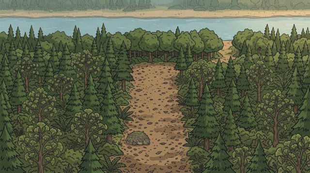
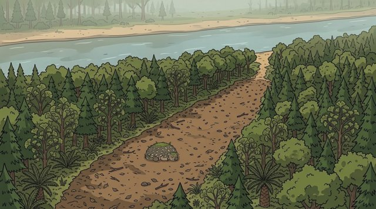
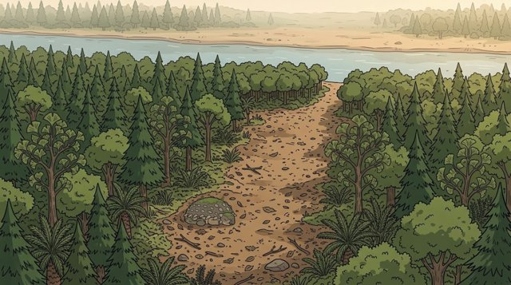
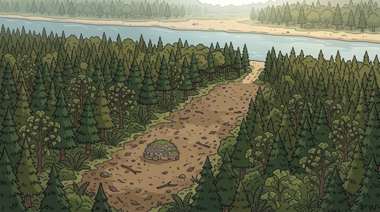
英文 prompt（送出的原文）
16:9, generate 1 image. Flat 2D cartoon in exactly the style of the attached plant sheet REF_PLANTS: thick black outlines, flat colors. No text anywhere in the picture. No people in the picture. All trees and plants are only the kinds shown in REF_PLANTS: conifers, cycads and ginkgos; no flowering trees and no palm trees. High aerial view from well above the treetops south of a forest clearing, looking north and steeply down. A long, narrow clearing of bare, leaf-covered earth runs from the bottom of the picture up toward the top, about twice as long as it is wide, and dense forest surrounds it closely on the left, on the right and at the near end. At the far (north) end of the clearing, a band of dense forest separates it from a wide, slow river that runs left to right across the upper part of the picture; that band of trees has one narrow gap at its right end. Beyond the river is a flat sandy far bank and then an open, hazy forest stretching into the distance. Near the left edge of the clearing, about one third of the way from its near end, lies ANKY the ankylosaur (exactly as in the attached ANKY sheet REF_ANKY), fast asleep and curled up so it looks like a big moss-covered boulder, small in the picture. Everything is sharp and clear. Bright morning light from the right.
中文翻譯
16:9，畫 1 張。完全照附的植物設定圖 REF_PLANTS 的畫風：粗黑外框、平塗色。畫面裡沒有任何字。畫面裡沒有人。樹和植物只能是 REF_PLANTS 裡的種類：針葉樹、蘇鐵、銀杏；沒有開花的樹、沒有棕櫚樹。從森林空地南邊、樹梢上方很高的地方空拍，往北、很陡地往下看。一塊窄長的空地（鋪著落葉的泥土）從畫面底部往上延伸，長大約是寬的兩倍，左邊、右邊和近端都緊緊被茂密森林包住。空地的遠端（北端）有一排茂密的樹，把空地跟一條寬緩的河隔開，河從左到右橫過畫面上半部；那排樹的右端有一道窄窄的缺口。河的對岸是平坦的沙岸，再過去是一片開闊、朦朧的森林往遠方延伸。空地左邊緣、離近端約三分之一的地方，趴著甲龍 ANKY（完全照附的甲龍設定圖 REF_ANKY），睡得很熟、蜷成一團，看起來像一顆長滿青苔的大石頭，在畫面裡很小。全部清楚銳利。明亮的早上陽光從右邊照過來。
空拍・空位版 AIR_EMPTY
地圖上的位置：同 AIR_ROCK，甲龍醒來走了
附的參考圖：
REF_PLANTSFlow 畫的 4 張（點圖開 Flow）
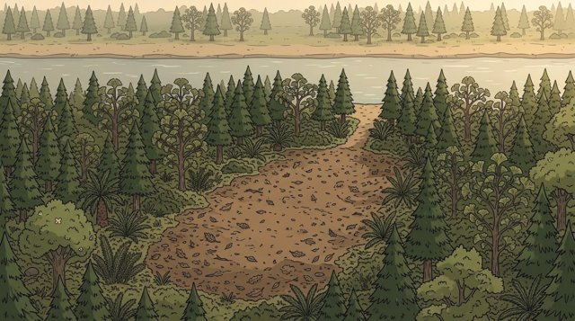
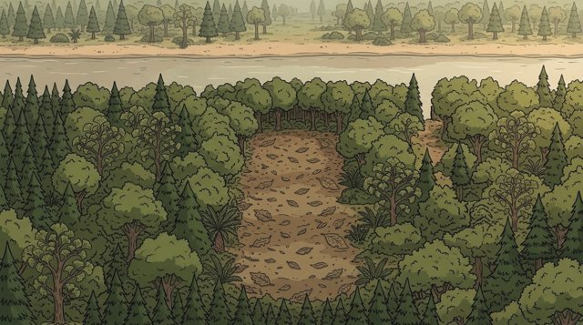
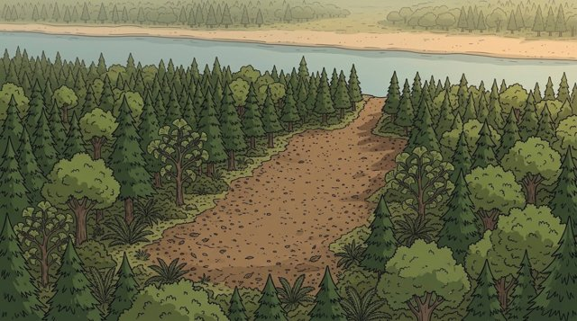
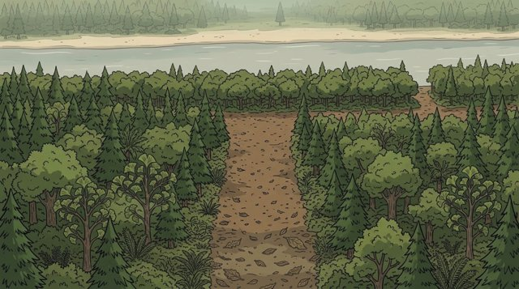
英文 prompt（送出的原文）
16:9, generate 1 image. Flat 2D cartoon in exactly the style of the attached plant sheet REF_PLANTS: thick black outlines, flat colors. No text anywhere in the picture. No people, no characters and no animals anywhere in the picture: an empty landscape. All trees and plants are only the kinds shown in REF_PLANTS: conifers, cycads and ginkgos; no flowering trees and no palm trees. High aerial view from well above the treetops south of a forest clearing, looking north and steeply down. A long, narrow clearing of bare, leaf-covered earth runs from the bottom of the picture up toward the top, about twice as long as it is wide, and dense forest surrounds it closely on the left, on the right and at the near end. At the far (north) end of the clearing, a band of dense forest separates it from a wide, slow river that runs left to right across the upper part of the picture; that band of trees has one narrow gap at its right end. Beyond the river is a flat sandy far bank and then an open, hazy forest stretching into the distance. The clearing is completely empty, with no rocks or boulders in it. Everything is sharp and clear. Bright morning light from the right.
中文翻譯
16:9，畫 1 張。完全照附的植物設定圖 REF_PLANTS 的畫風：粗黑外框、平塗色。畫面裡沒有任何字。畫面裡沒有人、沒有角色、沒有動物：一張空景。樹和植物只能是 REF_PLANTS 裡的種類：針葉樹、蘇鐵、銀杏；沒有開花的樹、沒有棕櫚樹。從森林空地南邊、樹梢上方很高的地方空拍，往北、很陡地往下看。一塊窄長的空地（鋪著落葉的泥土）從畫面底部往上延伸，長大約是寬的兩倍，左邊、右邊和近端都緊緊被茂密森林包住。空地的遠端（北端）有一排茂密的樹，把空地跟一條寬緩的河隔開，河從左到右橫過畫面上半部；那排樹的右端有一道窄窄的缺口。河的對岸是平坦的沙岸，再過去是一片開闊、朦朧的森林往遠方延伸。空地裡完全是空的，沒有任何石頭或大石塊。全部清楚銳利。明亮的早上陽光從右邊照過來。
第 2 步：分鏡測試
要回答：每格附空景圖、不寫文字背景，畫出來的地景會不會穩定、跟空景圖一致？照實驗室做法，r2 實際送出的 prompt 只改三處：拿掉畫風句；拿掉 ENV 句和 Background 段；開頭加一句「The place is the forest clearing exactly as in the attached background image PLATE_ARRIVE_…」。附圖只把 ENV_ARRIVE_AM 換成空景圖。06-02、06-10 是之前背景畫成天空的格。 第一次（T1）06-02 實際只附上空景圖和 REF_PORTAL，REF_HERO 沒附上（EP1-NEW 搜不到原版 REF_HERO），不算數；重新上傳 REF_HERO 後重畫（T2），下面是 T2，附圖數已逐格核對。
EP1N-06-02
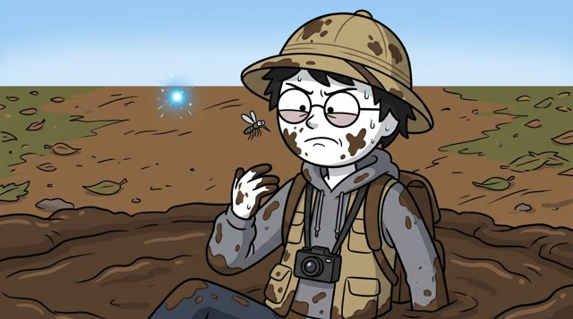
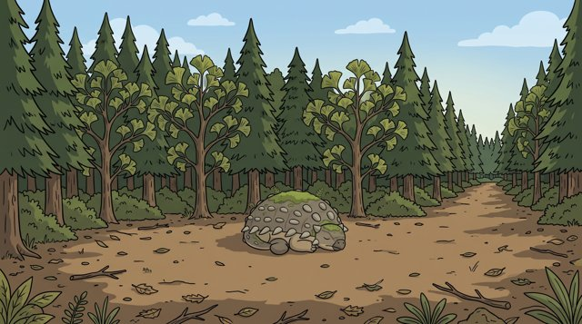
PLATE_ARRIVE_W_ROCK這次畫的 4 張（點圖開 Flow）
附的參考圖：
PLATE_ARRIVE_W_ROCK REF_HERO REF_PORTAL
英文 prompt（送出的原文）
16:9, generate 1 image. The place is the forest clearing exactly as in the attached background image PLATE_ARRIVE_W_ROCK. No text anywhere in the picture. Only two things in the picture: HERO (exactly as in the attached HERO character sheet) and a single small cartoon mosquito, nothing else. HERO has just pushed himself up to sit in the mud, one hand half-raised as if to swat; he is cross-eyed and scowling at a single mosquito hovering right in front of his face. He wears his hat, a small camera on a strap across his chest and a backpack; he is covered in wet mud and dripping with sweat. HERO's face and hands are pure paper white. Expression: irritated and cross-eyed, a scrunched annoyed frown. Shot size: Medium Close-up (MCU). HERO is framed from the chest up; the bottom edge of the picture is at his chest. Camera direction: front three-quarter view. The camera is ahead of HERO and off to one side of the clearing, so we see his face and one side of his body. Camera angle: Eye-level: the camera is at HERO's eye height, looking straight ahead.
EP1N-06-10
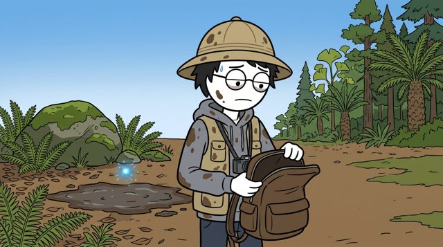
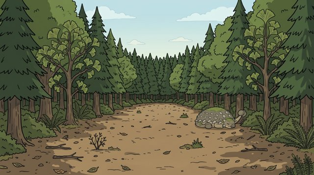
PLATE_ARRIVE_S_ROCK這次畫的 4 張（點圖開 Flow）
附的參考圖：
PLATE_ARRIVE_S_ROCK REF_HERO REF_PORTAL
英文 prompt（送出的原文）
16:9, generate 1 image. The place is the forest clearing exactly as in the attached background image PLATE_ARRIVE_S_ROCK. No text anywhere in the picture. Only one character in the picture: HERO (exactly as in the attached HERO character sheet), nothing else. HERO has taken his backpack off and holds it open in both hands in front of his chest, peering down into the empty main pocket where a water bottle should be; the pocket is clearly empty. He still wears his hat and the small camera on a strap across his chest; muddy and sweaty. HERO's face and hands are pure paper white. Expression: dismayed, a flat disappointed frown, looking down into the empty bag. Shot size: Medium Shot (MS). HERO is framed from the waist up; the bottom edge of the picture is at his waist. Camera direction: front three-quarter view. The camera is ahead of HERO and off to one side of the clearing, so we see his face and one side of his body. Camera angle: Eye-level: the camera is at HERO's eye height, looking straight ahead.
EP1N-06-09W
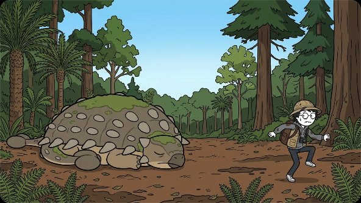
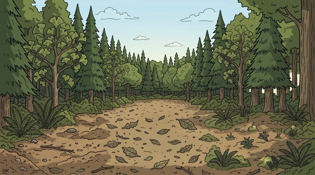
PLATE_ARRIVE_N這次畫的 4 張（點圖開 Flow）
附的參考圖：
PLATE_ARRIVE_N REF_HERO REF_ANKY PAIR2_ANKY
英文 prompt（送出的原文）
16:9, generate 1 image. The place is the forest clearing exactly as in the attached background image PLATE_ARRIVE_N. No text anywhere in the picture. Only two characters in the picture: HERO (exactly as in the attached HERO character sheet) and ANKY (exactly as in the attached ANKY character sheet), nothing else. In the foreground HERO creeps away on an exaggerated tiptoe, knees lifted high, arms out for balance, leaning forward, his head turned back over his shoulder to look at ANKY. Behind him ANKY is the large moss-covered sleeping ankylosaur, lying low like a mossy mound with its eye shut. HERO is much smaller than the animal. He wears his hat, a small camera on a strap across his chest and a backpack; muddy and sweaty. HERO's face and hands are pure paper white. Expression — HERO: wincing and nervous, biting his lip, wide eyes, trying not to make a sound; ANKY: asleep, eye closed. One of the attached images is a scale chart showing HERO standing next to ANKY at their true relative size; draw HERO and ANKY at exactly the size ratio shown in that chart. Shot size: Wide Shot (WS). HERO's whole body is clearly visible, with a lot of the surroundings around him. Camera direction: side view. The camera is beside the clearing and sees HERO exactly from the side. Camera angle: Eye-level: the camera is at HERO's eye height, looking straight ahead.